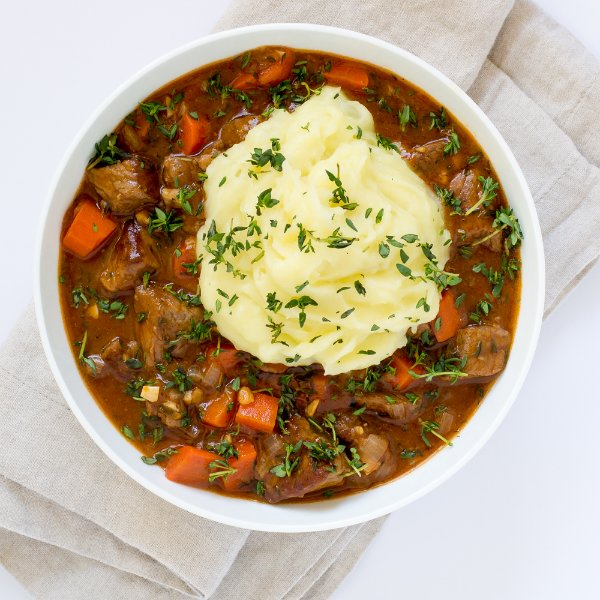

Beef & Carrot Stew with Mashed Potato Topping

Prep Time
45 min
Nutrition (per serving)
689.5 kcalCalories
44.4 gProtein
51.6 gCarbs
35.6 gFat
Full nutrition table
| Calories | 689.5 kcal |
| Total fat | 35.6 g |
| Saturated fat | 17.3 g |
| Trans fat | 1.8 g |
| Cholesterol | 134.3 mg |
| Sodium | 226.5 mg |
| Carbohydrates | 51.6 g |
| Fiber | 8.9 g |
| Sugars | 8.1 g |
| Protein | 44.4 g |
| Potassium | 1808.7 mg |
| Calcium | 124.9 mg |
| Iron | 6.7 mg |
| Vitamin A | 183.3 IU |
| Vitamin C | 39.3 mg |
| Vitamin D | 15.3 IU |
Cookware
Ingredients
- 4 mediumcarrots
- 16 fl ozchicken or vegetable broth
- 1 small pkgfresh thyme
- 4 clovesgarlic
- 1 ½ lbstriploin (New York strip) steak
- 2 tbsptomato paste
- 1 mediumyellow onion
- 4 mediumyellow potatoes
- all-purpose flour
- black pepper
- butter, unsalted
- salt
- Worcestershire sauce
Steps
- Wash and dry the fresh produce.4 medium carrots
4 medium yellow potatoes
1 small pkg fresh thyme - Peel and halve the potatoes crosswise; transfer to a medium saucepan.
- Cover the potatoes with hot water (from the tap) by about 1 inch; bring the water to a boil over high heat.
- Peel the carrots, then trim off the ends; discard the peels and trimmings. Medium dice the carrots (cut into ½-inch cubes) and transfer to a medium bowl.
- Trim off and discard the ends of the onion and remove the outer layer; small dice the onion (cut into ¼-inch pieces) and add to the bowl with the carrots.1 medium yellow onion
- Trim off and discard the root ends of the garlic; peel and mince or press the garlic. Add the garlic to the bowl with the other vegetables.4 cloves garlic
- Once the water in the saucepan is boiling, cook the potatoes until they are tender when pierced with a knife, 10 to 12 minutes.
- Preheat a sauté pan over medium-high heat.
- While the pan heats up, pat the beef dry with paper towels, then cut into 1-inch chunks; transfer to a medium bowl.1 ½ lb striploin (New York strip) steak
- Season the beef with salt and pepper; toss to coat.1 tsp salt
½ tsp black pepper - Add the beef cubes to the pan in a single layer; cook, stirring occasionally, until the beef is browned but not fully cooked through, 4 to 5 minutes. Once done, transfer the beef to a bowl.
- While the beef cooks, wash and dry the cutting board and knife.
- Once the beef has been transferred, add butter to the pan, followed by the onions, carrots, and garlic. Cook, stirring occasionally, until the carrots begin to soften, 3 to 4 minutes.2 tbsp butter, unsalted
- Add Worcestershire sauce, salt, and pepper to the sauté pan; stir to combine.2 tsp Worcestershire sauce
½ tsp salt
¼ tsp black pepper - Return the beef to the pan, then sprinkle the beef and vegetables with flour and stir to combine.2 tbsp all-purpose flour
- Add tomato paste and broth to the pan and stir to combine; increase the heat to high and bring the liquid to a simmer. Once simmering, reduce the heat to medium, cover the pan with a lid, and cook until the carrots are tender and the liquid is reduced, about 10 minutes.2 tbsp tomato paste
16 fl oz (2 cups) chicken or vegetable broth - One by one, holding a sprig of thyme at its top, run you fingers down it to remove the leaves. Discard the sprigs and chop the leaves; stir about ¾ of the thyme into the stew and save the rest for garnishing.
- Once the potatoes are tender, drain most of the water, but leave some for mashing. Add butter, salt, and pepper; mash with a potato masher until smooth.2 tbsp butter, unsalted
½ tsp salt
¼ tsp black pepper - To serve, spoon the stew into a bowl, top with scoops of mashed potatoes, and garnish with the remaining thyme. Enjoy!